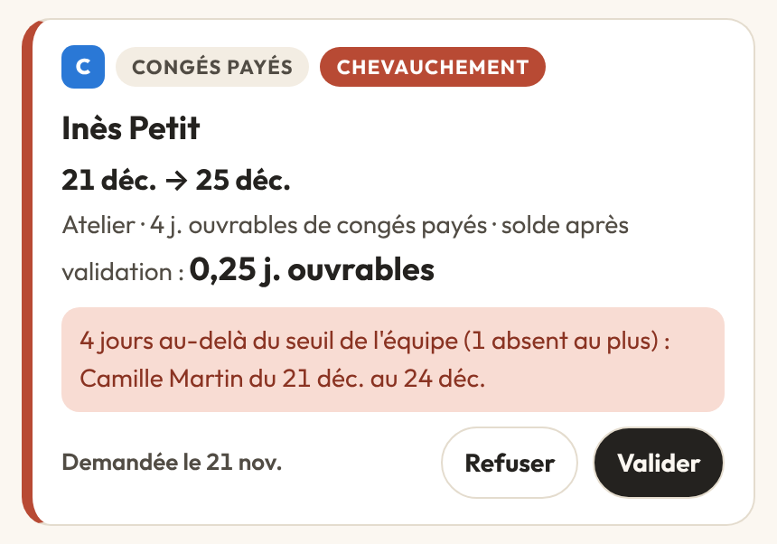
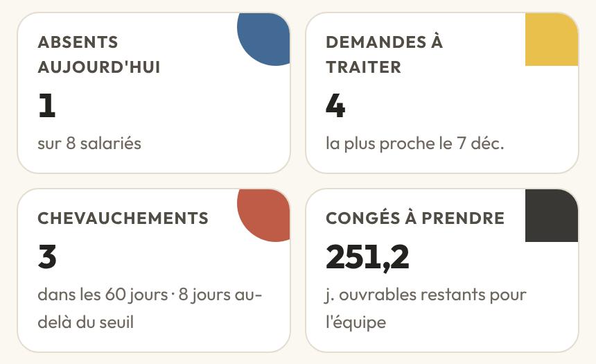

Même atelier · même semaine
Dans Suivi des congés, la demande arrive avec l'alerte.

Capture de la démo Suivi des congés et absences QME · données fictives
Le calendrier de décembre
La ligne « Absents » passe au rouge.

Du 21 au 24 déc. : 2 absents
Capture de la démo · données fictives
Le tableau de bord
Tous les chevauchements des 60 prochains jours.

Capture de la démo · données fictives